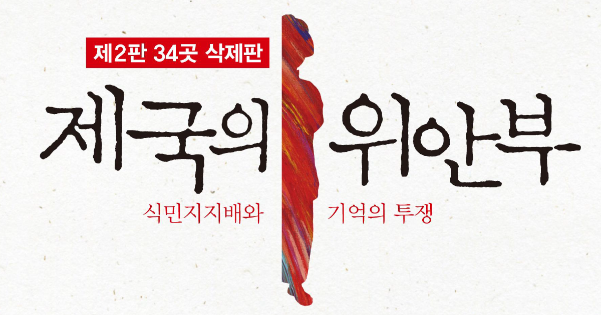

‘위안부 문제’에 대해 쓰는 또 하나의 이유는 이 문제가 단지 ‘해결’을 기다리는 과거의 문제가 아니라 오늘의 문제이기도 하기 때문이다. 위안부 문제는 일본과 한국에 존재하는 ‘미군기지’의 문제이기도 하다. 그러나 위안부 문제를 ‘일본’만의 특수한 일로 생각하는 사고는 그런 구조를 보지 못하게 만든다. ‘평화’를 지향하는 현재의 운동이 평화를 만들지 못하는 이유이기도 하다.
이 책은 그런 생각들을 정리해본 것이지만, 결과적으로 ‘세계의 상식’에 이의제기를 하는 셈이된 이 책이 어떻게 받아들여질지 조금은 두렵기도 하다. 하지만 당장은 어떤 운명이 기다리고 있든, 언젠가는 이 책이 식민지 시대가 만든 우리 안의 분열들, 동아시아의 분열을 극복하기 위한 작은 디딤돌이 될 수 있으리라고 믿는다. 그래서 나는 이 책을, 역사가 만드는 대립과 분열로 인해 상처 입었던 이들에게, 그럼에도 여전히, 상처를 딛고 평화와 신뢰를 만들려 하는 이들에게, 누구보다도 먼저 보내고 싶다.
- 서문, "다시 '생산적인 논의'를 위하여"에서
제국의 위안부
서문
제 1부: '위안부'란 누구인가 - 국가의 관리, 업자의 가담
제 1장: '강제연행'과 '국민동원'의 차이
- 유괴범들과 일본의 소녀들
- 조선인의 가담 - 인신매매와 성매매
- 공창과 사창 - 여러 종류의 위안소들
제 2장: 위안소에서 - 풍화되는 기억들
- 위안부의 역할
- 사랑과 평화
- 또 하나의 일본군 - 수치와 연민
- 관리자로서의 일본군
- 병사와 위안부
- 망각되는 기억들
- 종군하는 업자들
- 강제 노동과 착취
- 감시.폭행.중절
- 제국의 위안부
제 3장: 패전 직후 - '조선인 위안부의 귀환'
제 2부: 기억의 투쟁 - 다시, '조선인 위안부'는 누구인가
제 1장: 지원단체의 '위안부' 설명
제 4장: 일본인 지원자들의 문제
제 5장: 일본인의 부정의 심리와 식민지 인식
- '자발성'의 구조
- '적극성'의 배경
- '과거'를 생각하는 의미
제 3부: 냉전 종식과 위안부 문제
제 1장: 해석의 정치학 - '사죄와 보상'을 둘러싼 갈등
제 2장: 정치화된 일본의 지원운동
제 3장: 한국 지원운동의 모순
- '위안부'가 없는 '위안부 소녀상' - 정대협의 힘과 민족 권력
- 죄인가 범죄인가 - '공식 사죄'와 '법적 책임'
- 피해자들의 생각과 한일협정
- 한일협정의 논의
- 한일합방조약의 구속
- 제국의 냉전시대의 한계
- 위안부에 대한 이해
제 4장: 세계의 생각을 생각한다
제 5장: 일본 정부에 기대한다 - 새로운 조치에 나서야 할 세 가지 이유
제 4부: 제국과 냉전을 넘어서
위안부와 국가
새로운 아시아를 향해서 - 패전 70년, 해방 70년
부록1: 위안부 문제, 다시 생각해야 하는 이유